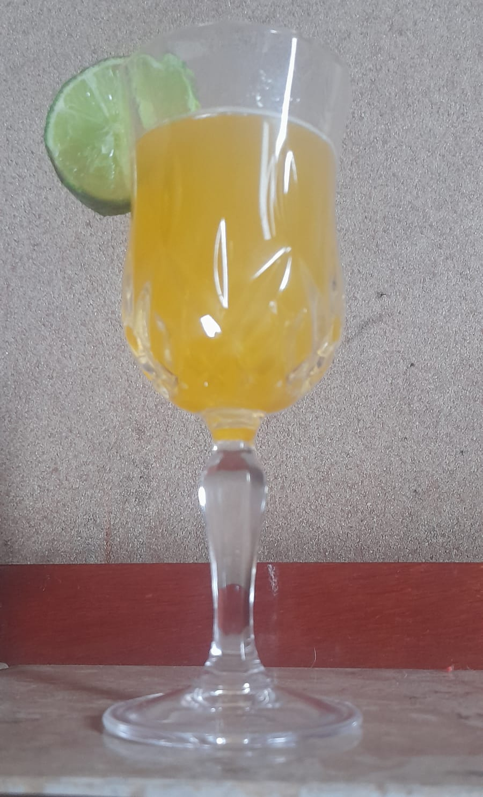

Composição registrada
Cachaça artesanal, maracujá, laranja e abacaxi, com rodela de limão.
Faixa associada
Tropicália · Caetano Veloso
OUVIR / LOCALIZAR A FAIXANota de contexto
A faixa de Caetano mistura imagens do Brasil tradicional e moderno, criando uma colagem que desafia a ideia de uma cultura nacional comportada e uniforme. Sua crítica aparece na forma: mistura, exagero e provocação, em vez de uma acusação literal ao regime.